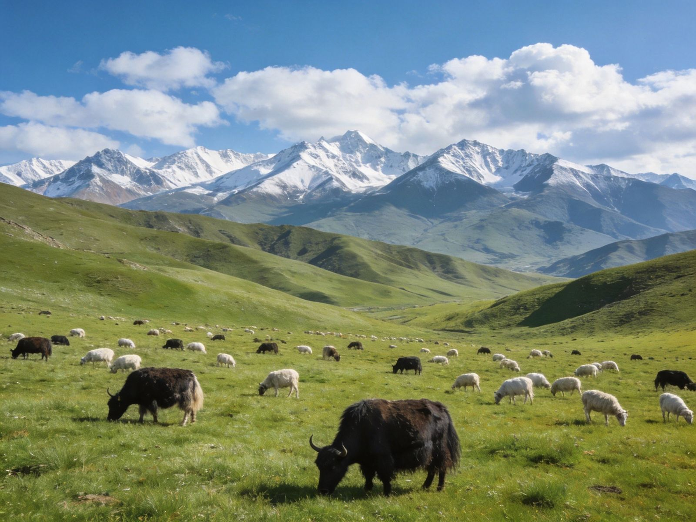

一分钟看懂先快速建立整体认知
QILIAN AT A GLANCE祁连山地处青海海北祁连县，以"天境祁连"著称，风光核心是卓尔山的丹霞山色、祁连大草原的高山草甸，以及连绵的雪山湖泊。它常与门源油菜花、张掖连成青甘经典环线，是自驾黄金段的"绿肺"。夏秋草绿花繁、冬春银装，不同季节各有看点。
🌄 卓尔山丹霞
🌿 祁连大草原
🏔 雪山湖泊
🚗 自驾黄金段
提示：祁连适合自驾/包车深度漫游，佛系停留一晚会更融入。